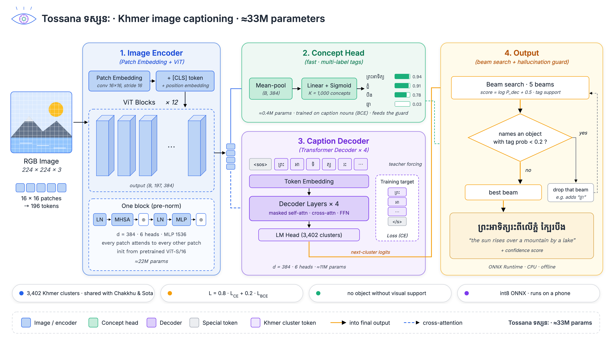

Tossana (ទស្សនៈ, "seeing") describes photos in Khmer: what is in the picture, who is doing what, and where, as a short caption or a detailed description. Small enough to run on a phone without internet (119 MB, about 0.25 s per caption on a CPU), so it can help people who cannot see the screen, and your photos never leave the device.
Try Tossana on Hugging Face: upload a photo, take one with your camera, or click an example. Choose a short caption or a detailed description (new in v3), and the int8 ONNX model (119 MB, the on-device version) or the full PyTorch model. Preview release: it can name things that are not in the photo, and the detailed mode can invent details.
Today's captioning models were trained almost only on English. Khmer brings problems they never see.
There is no large open set of photos with Khmer descriptions. Tossana starts from English captions translated to Khmer, with the test set checked by people.
Khmer is written without spaces, so word-based scores do not fit. Tossana is scored on Khmer letter clusters, the same units Chakkhu and Sota use.
Small captioning models often name objects that are not in the photo. For someone who cannot see the picture, a wrong object is worse than a short caption.
About 121 million parameters: a pretrained SigLIP image encoder, a decoder that writes Khmer clusters in two lengths (short or detailed), and, planned, a fast concept head and a guard against invented objects. It shares Sota's recipe: Khmer clusters as tokens, int8 ONNX, beam search.

Figure 1. Design. Patches → image encoder → caption decoder writing Khmer clusters → beam search. The figure shows v1 (ViT-S, d 384); v3 uses a SigLIP-base encoder (12 blocks, d 768) with a 768→512 projection into a 6-layer decoder, and a style token after the start token chooses a short caption or a detailed description. The concept head and guard are planned.
<short> or <detail> after the start tells the decoder whether to write one sentence or 2–4 sentences with colors and positions.| Design | On a phone, in Khmer? |
|---|---|
| Large vision-language modelQwen2.5-VL, LLaVA: billions of parameters | too big |
| Fine-tune GIT / BLIPEnglish tokenizers, 150M+ | no Khmer tokens |
| CNN + LSTMclassic, small | weak captions |
| SigLIP + cluster decoder + guardour choice, ≈121M | small + Khmer |
Short captions are scored on 2,910 test photos no model trained on: 1,000 objects and indoor scenes (COCO), 1,000 everyday photos (Flickr8k), both translated to Khmer, and 910 Cambodian scenes (phonsobon). Detailed descriptions are scored on 231 DOCCI photos with long human descriptions, translated. CIDEr: higher is better, counted on Khmer letter clusters. ⚠️ Test captions are not checked by people yet.
| Version | Tossana wrote |
|---|---|
| v2 | ការិយាល័យដែលមានកែវកាហ្វេនៅលើតុ (an office with a coffee cup on the table) |
| v3 short | កែវប្លាស្ទិកដែលដាក់នៅលើតុស (a plastic cup on a white table) |
| v3 detailed | រូបថតនេះបង្ហាញពីទិដ្ឋភាពលម្អិតនៃកែវប្លាស្ទិកដែលមានគម្របប្លាស្ទិកច្បាស់លាស់ដែលដាក់លើតុសមួយ… (a close-up of a plastic cup with a clear plastic lid on a white table…) |
| Photo | v3 wrote |
|---|---|
| Monster Energy can | ដបស្រាបៀរ ("beer bottle": brands are not learned yet) |
| earbuds case | កាបូប… ("a bag…") |
| boxes + water packs | …ផ្ទះបាយ… (detailed mode invents "a kitchen") |
| Version | Size | v2 | v3 | v3 same as PyTorch |
|---|---|---|---|---|
| PyTorchreference | 483 MB | 120.5 | 126.7 | — |
| ONNX fp32 | 462 MB | 120.2 | 125.6 | 93% |
| ONNX int8per-channel, phone & web | 119 MB | 122.6 | 124.0 | 70% |
| Run | Machine | COCO | Everyday | Cambodian |
|---|---|---|---|---|
| v1 (Exp 5)ViT-S 33M, with news | RTX 3090 | 42.7 | 71.3 | 23.4 |
| Exp 6b+ COCO, no news | Mac M4 Pro | 103.7 | 76.7 | 14.9 |
| Exp 7+ SigLIP eye, 104M | RTX 4090 | 118.5 | 85.4 | 20.1 |
| v2 (Exp 7b)+ Cambodian ×4 | RTX 4090 | 115.1 | 86.9 | 22.0 |
| v3 (Exp 8)+ detailed mode, 121M · published | RTX 5090 | 116.0 | 88.1 | 20.3 |
There was no open Khmer captioning set big enough, so Tossana combines Khmer sets shared by others with English sets translated to Khmer. None of the Khmer sets states a license yet: research use, with credit.
| COCO → Khmer15,000 photos × 2: objects, indoor scenes (MADLAD-400) | 29,870 |
| Flickr8k → Khmereveryday photos (MADLAD-400) | 29,723 |
| phonsobon v1 + v2Khmer descriptions of Cambodian scenes, shown 4× more often | 2,157 |
| Angkor carvings → KhmerDarayut's heritage descriptions, shown 2× | 769 |
| Word fixesMADLAD mistakes fixed: table → តុ (not តារាង), objects "sit" → ដាក់ (not អង្គុយ) | 2,478 |
| DOCCIGoogle, long descriptions written by people | 7,924 |
| Localized Narrativespeople describing our COCO photos aloud | 16,138 |
| PixMo-Capvery detailed descriptions of web photos | 15,569 |
| Qwen2.5-VL teacheran open 7B model describing our Cambodian and Flickr8k photos | 8,240 |
One step at a time, each with a check before the next.
ViT-S → SigLIP eye, COCO photos, no news: objects 42.7 → 115.1, everyday 71.3 → 86.9.
A detailed mode (2–4 sentences) from 47k long descriptions; Khmer word fixes. Try it.
Photos of phones, cans, cups and signs with teacher captions; a sharper 384 px eye or Chakkhu OCR to read logos; a faster ONNX detailed mode.
A guard that drops descriptions naming objects it does not see, and more real Cambodian photos.
A Khmer speaker checks the test captions; a browser demo like Sota's; describing photos together with Chakkhu, offline.
@misc{ing2026tossana,
author = {Ing, Muyleang},
title = {Tossana: A Small Khmer Image Captioning Model},
year = {2026},
publisher = {Hugging Face},
url = {https://huggingface.co/muyleanging/Tossana-Caption-Khmer}
}| Source | License |
|---|---|
| khmer_Images_Captioning + v2phonsobon · Khmer descriptions of Cambodian scenes | not stated |
| Khmer-Captioningrinabuoy · news photo captions (training only) | not stated |
| khmer-historical-heritage-image-captioningDarayut · Angkor carvings (English, translated) | not stated |
| Flickr8kphotos and English captions · Hodosh, Young & Hockenmaier, JAIR 2013 | research only |
| SigLIPimage encoder of v2 and v3 · Zhai et al., ICCV 2023 | Apache-2.0 |
| COCOphotos and English captions (Karpathy split), translated · Lin et al., ECCV 2014 | CC BY 4.0 |
| DOCCIlong human descriptions, translated (v3 detailed mode) · Onoe et al., ECCV 2024 | CC BY 4.0 |
| Localized Narrativesspoken descriptions of COCO photos, translated · Pont-Tuset et al., ECCV 2020 | CC BY 4.0 |
| PixMo-Capdetailed descriptions of web photos, translated · Deitke et al., 2024 | ODC-BY |
| Qwen2.5-VL-7Bteacher: English descriptions of our training photos | Apache-2.0 |
| ViT-S/16image encoder of v1 · Dosovitskiy et al., ICLR 2021 | Apache-2.0 |
| NLLB-200English → Khmer translation (compared, not used) · NLLB Team, 2022 | CC BY-NC 4.0 |
| MADLAD-400English → Khmer translation (used) · Kudugunta et al., 2023 | Apache-2.0 |
| CIDEr · BLEUcaption scores · Vedantam et al., CVPR 2015 · Papineni et al., ACL 2002 | method |
@article{hodosh2013framing,
title = {Framing Image Description as a Ranking Task: Data, Models and Evaluation Metrics},
author = {Hodosh, Micah and Young, Peter and Hockenmaier, Julia},
journal = {Journal of Artificial Intelligence Research},
volume = {47},
pages = {853--899},
year = {2013}
}
@inproceedings{dosovitskiy2021vit,
title = {An Image is Worth 16x16 Words: Transformers for Image Recognition at Scale},
author = {Dosovitskiy, Alexey and Beyer, Lucas and Kolesnikov, Alexander and Weissenborn, Dirk and Zhai, Xiaohua and Unterthiner, Thomas and Dehghani, Mostafa and Minderer, Matthias and Heigold, Georg and Gelly, Sylvain and Uszkoreit, Jakob and Houlsby, Neil},
booktitle = {International Conference on Learning Representations (ICLR)},
year = {2021}
}
@article{nllb2022,
title = {No Language Left Behind: Scaling Human-Centered Machine Translation},
author = {{NLLB Team} and Costa-juss{\`a}, Marta R. and others},
journal = {arXiv preprint arXiv:2207.04672},
year = {2022}
}
@article{kudugunta2023madlad,
title = {MADLAD-400: A Multilingual And Document-Level Large Audited Dataset},
author = {Kudugunta, Sneha and Caswell, Isaac and Zhang, Biao and Garcia, Xavier and Choquette-Choo, Christopher A. and Lee, Katherine and Xin, Derrick and Kusupati, Aditya and Stella, Romi and Bapna, Ankur and Firat, Orhan},
journal = {arXiv preprint arXiv:2309.04662},
year = {2023}
}
@inproceedings{vedantam2015cider,
title = {CIDEr: Consensus-based Image Description Evaluation},
author = {Vedantam, Ramakrishna and Zitnick, C. Lawrence and Parikh, Devi},
booktitle = {IEEE Conference on Computer Vision and Pattern Recognition (CVPR)},
pages = {4566--4575},
year = {2015}
}Tossana is free and made by one person. Every donation to Tossana will be given to Kantha Bopha Children's Hospital, which treats sick children in Cambodia.
ប្រាក់ឧបត្ថម្ភទាំងអស់សម្រាប់ Tossana ទស្សនៈ នឹងប្រគល់ជូន មន្ទីរពេទ្យកុមារគន្ធបុប្ផា ដើម្បីជួយព្យាបាលកុមារឈឺនៅកម្ពុជា។
You support free Khmer AI tools, and the money goes to children who need care. Any amount helps. Thank you 🙏 អរគុណច្រើន!